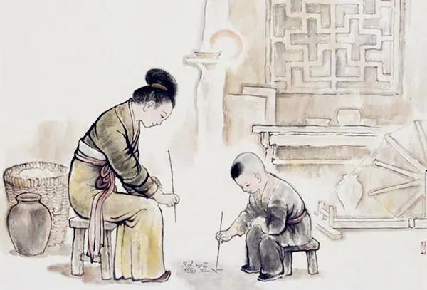
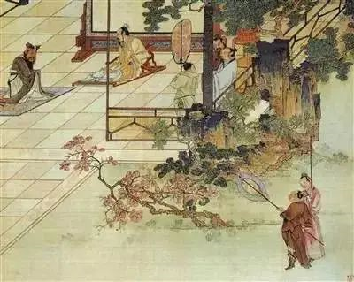
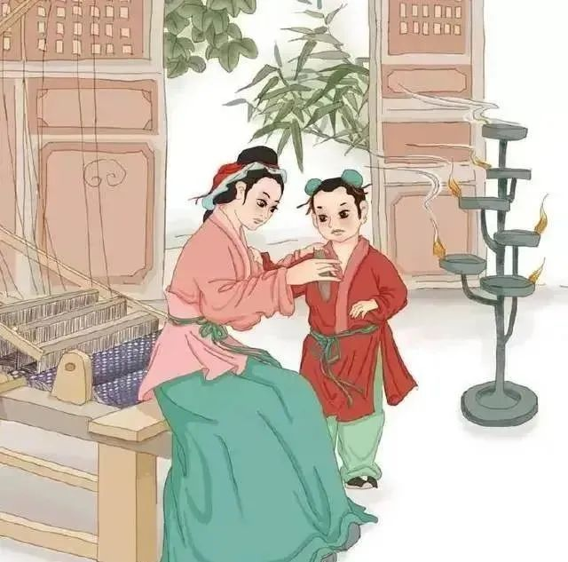
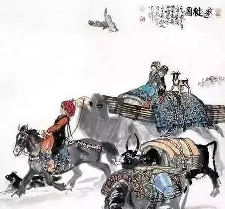
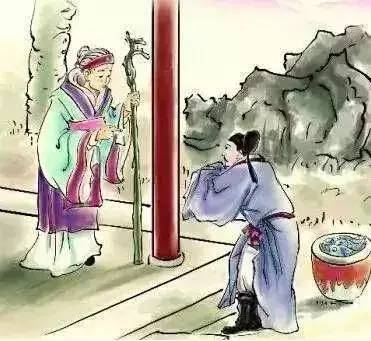
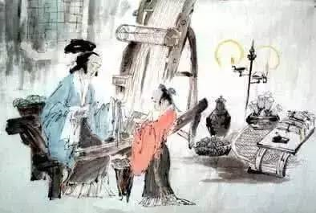
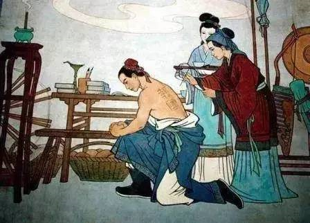

母亲节的由来和六个关于母亲的中国传统文化故事
美有很多种
妈妈就是其中一种
世间所有美好的词汇
都不足以形容妈妈的好
母亲节·快乐
MAY· I LOVE YOU
母亲节，是一个感谢母亲的节日。
母亲们在这一天通常会收到礼物，康乃馨被视为献给母亲的花，而中国的母亲花是萱草花，又叫忘忧草。
母亲节的由来
母亲节的传统起源于古希腊。
在一月八日这一天，古希腊人向希腊众神之母瑞亚(英文：Rhea、Cybele，希腊文：宙斯、波塞冬、哈德斯、得墨忒耳、赫拉和赫斯提亚的母亲，故称众神之母)致敬。
到古罗马时，这些活动的规模就变得更大，庆祝盛况往往持续达三天之久。
当然，古时人们对女神的崇拜只不过是一种迷信，它同今天人们对母性的尊敬是大不相同的。
17世纪中叶，母亲节流传到英国，英国人把封斋期的第四个星期天作为母亲节。
在这一天里，出门在外的年轻人将回到家中，给他们的母亲带上一些小礼物。
1876年，美国悲悼南北战争的死者。
安娜·贾维斯夫人在礼拜堂讲授美国国殇纪念日的课程，讲到战役中捐躯的英雄故事后，她祈祷说：
“但愿在某处、某时，会有人创立一个母亲节，纪念和赞扬美国与全世界的母亲。”
1914年，美利坚合众国国会正式命名5月的第二个星期日为母亲节，并要求总统发布宣言，号召政府官员在所有的公共建筑物上悬挂国旗。
因为母亲节变的过于商业化，安娜·贾维斯成立了母亲日国际协会，一直到1948年过逝为止，持续进行抗议活动，希望让母亲节回复到单纯赞颂母亲的节日。
20世纪80年代，母亲节逐渐被中国内地的民众所接受。
20世纪末，随着中国与国际的日益接轨，母亲节这一节日在中国大陆各地日益推广开来，越来越多的人开始接受母亲节概念。
在每年5月的第二个星期日，中国人和全世界其他国家的人们一道，以各种各样的方式表达对母亲养育之恩的感谢。
当然，中国人的母亲节更有中国味道，我们会以自己特有的方式表达浓浓的亲情。
在母亲节这一天，人们会送给母亲鲜花、蛋糕，亲手烹制的饭菜等等礼物。
从小就孝敬父母的中国儿童会尝试着为母亲做饭，洗脸，化妆，演奏音乐，绘制图画，让母亲们快乐地过节。
中国历史上并没有自己的母亲节。
近年来，很多学者们提议为弘扬中华传统文化、感念母爱而设立“中华母亲节”。
在倡议伊始，学者们对于把母亲节定在哪一天有很大的分歧。
由于中华文化的博大精深，所涌现出的著名母亲也非常之多。
大家有的说应该是刺字岳母（岳飞之母）生子的日子；
有的说应该是三迁孟母（孟子之母）生子的日子；
还有人提出应该是“女娲圣母”的生辰......
最终的结果是，大家多数认为应当选取孟子生辰作为“中华母亲节”的节日。
原因为孟母是真实的历史人物，不是神话、传说人物。
孟母的事迹记载详实，很多古代典籍都有明确记载，流传千年不绝。
孟母三迁、孟母断机等事迹，至今还有遗迹供大家瞻仰。
孟子在中国的地位极高，孟母不仅是慈母也是严师，教子懿范千秋。

除此之外，在孟子故里，已经在多年前就于孟子生辰农历四月初二有纪念活动了，现在有些地方也加入了这个行列之中。
所以，在没有国家法律法规出台之前，我们的“中华母亲节”在民间被认为是农历四月初二。
在此也希望更多的读者可以知道这个日子，弘扬中国文化、保存中国情结，加入到庆祝自己国家母亲节的队伍之中。
今天就是母亲节了，一定要让孩子知道以下六个关于母亲的传统文化故事。
一、孔母授学

孔子生于公元前551年9月28日，因孔母曾在尼山祈祷才怀了孕，父母给孔子起名为丘，字仲尼。
孔子的母亲其家族先祖伯禽，是鲁国的始祖，周公旦的长子，周朝先王周文王的孙子。
周文王姬姓，伯禽分封他的后代在颜邑做邑首，以封地为姓，世代相传，成为颜氏，孔子的母亲就是鲁国颜氏之女。
征在的父亲是饱学之士，在那个时代，同样能够让女儿识字识礼，可以见其开明。
父亲的直接传授，使征在不仅仅积累了丰厚的识见和学养，在教育和礼仪上也有很高的修养。
她把父亲家的全部书籍，都搬运到自己的新家，选三间房子的一间做书房，准备在孔丘满五岁的时候教他念书。
她先收了五个小孩子，在自己家教起蒙的书，得到每位学生家的学资，五斗小米和一担干柴，足以养活母子两人。
征在教孩子们习字、算数和唱歌三门功课，同时也教孩子们学习礼节和仪式。
孔丘不到六岁开始跟班学习。
后来，征在又收了几个小学生，小孔丘成为他母亲的小帮手，以尽辅导微薄之力。
孔母的苦心栽培和细心教育，不到十岁的小孔丘，已经学完全部起蒙功课。
因他爱琢磨，肯用脑子想问题，记忆力出众，喜欢帮助别人，成为同窗学习的佼佼者。
孔母帮助别人学习的经历，对孔子以后办私学、兴教育，都起到直接的影响。
二、孟母三迁

《三字经》里说："昔孟母，择邻处。"孟母三迁便出自于此。
战国时期的大思想家孟子从小丧父，全靠母亲倪氏一人日夜纺纱织布，挑起生活重担。
为了让孟子拥有一个真正好的教育环境，选择良好的环境，孟母煞费苦心，曾两迁三地。
三、徐母大义

三国时期，曹操为纳徐庶为己用，故挟持徐母写信将其召回，徐母不允，大骂曹操奸恶；
拿起砚台，砸向曹操，曹操激怒，欲杀徐母，被谋士程昱劝止，他们用计假冒徐母字迹，写信将孝子徐庶骗回。
徐母见儿子被骗，责骂儿子不聪，自尽而死。
徐庶之母大义凛然，嫉恶如仇，千载之下，谁不为之动容！
四、陶母退鱼

晋代名臣陶侃，少年时丧父，家境清贫，与母亲湛氏相依为命。
一次在食用官府的腌鱼时，陶侃念起贫寒中的母亲，于是派人给母亲送去一罐腌制好的鱼。
不料陶母湛氏非但不受，还将陶罐封上退回，并附信责备说：
“汝为吏，以官物遗我，非惟不能益吾，乃以增吾忧矣。”
陶侃见状十分愧疚。
就此一生严守母训，为官清正廉洁。
后朝廷对他委以重任，并封他为长沙郡公。
五、欧母画荻

北宋文学家欧阳修4岁的时候，其父欧阳观去世。
家里非常穷，常常是吃了上顿，没下顿。
他到了入学年龄，母亲满足他读书写字的愿望。
在冬天的夜里，将炉灰洒在雪地上，借着微亮的月光，用荻草杆当笔，在雪地上一笔一笔地教欧阳修写字、认字，并四处为他借书。
在母亲的教育帮助下，欧阳修得以博览群书，后来成为大学问家。
六、岳母刺字

南宋时候天下大乱，金兵在边境不断骚扰且准备向南攻打宋。
察觉这一情况，南宋政府在全国范围内进行征兵以抗击金的侵犯。
在河南老家的岳飞听到这个消息，便在第一时间内收拾好东西准备参军。
在临行前一晚，岳母在岳飞背上刺下“精忠报国”四个字，以期岳飞日后能够为国竭尽忠诚。